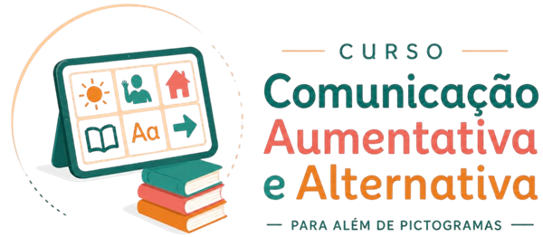

01
Fundamentos da CAA
Definições, história, mitos e verdades, comunicação multimodal, indicações, leis e normas.
De “CAA é técnica” → “CAA é essencial”
Da Literatura à Expertise Clínica
O método prático para fonoaudiólogas dominarem a avaliação, o raciocínio clínico e a implementação segura da Comunicação Aumentativa e Alternativa — do embasamento científico à prática em consultório, sem tentativa e erro e sem pranchas engavetadas pela família.


Se pelo menos um destes sinais bateu, este curso foi pensado para você.
Vai direto escolher símbolos e montar o recurso, sem uma avaliação que justifique por que aquele sistema, para aquela criança.
Já fez PECS, aplicativos, oficinas de pictograma. Sabe a teoria. Mas, na hora da sessão, falta o raciocínio que liga tudo.
Quando a família ou a equipe pergunta “por que esse recurso?”, falta o argumento clínico baseado em evidência.
O recurso está pronto, mas a comunicação não acontece, porque faltou avaliação, modelagem e treino dos parceiros.
O curso não te entrega mais um recurso. Ele muda a forma como você pensa cada caso.
Uma criança de 4 anos, com autismo, que ainda não se comunica pela fala. Veja como o raciocínio clínico muda o desfecho.
Exemplo ilustrativo, baseado em situações comuns na prática clínica.
Antes de escolher qualquer símbolo, existe um raciocínio. A prancha é consequência destas respostas:
E quais funções comunicativas ela já possui.
Onde a comunicação precisa acontecer, de verdade.
Seleção do recurso e do parceiro de comunicação.
Barreiras e facilitadores mapeados antes do sistema.
Só depois dessas respostas se pensa no sistema de CAA. O símbolo é a ferramenta. A comunicação é o objetivo.
Quero aprender a raciocinarNão é sobre decorar prancha pronta. É sobre saber decidir e conseguir explicar cada decisão.
Cada módulo é um marco de transformação: de “CAA é técnica” a “sou referência na minha atuação”.
Definições, história, mitos e verdades, comunicação multimodal, indicações, leis e normas.
Práticas Baseadas em Evidências, evidências de intervenção e modelo de participação.
Levantamento de necessidades, mapeamento de barreiras e facilitadores, relatório e plano de intervenção.
Símbolos, recursos e tecnologias, técnicas de acesso, modelagem, treino de parceiros e competência comunicativa.
Capacitação de parceiros (casa, terapia, escola), construção e configuração do sistema e apps: TD Snap, Asterics Grid e Cboard.
Da avaliação à implantação: fluxograma, passo a passo e evolução do aprendiz.
Aulas gravadas para ver, rever e aplicar no seu ritmo, com acesso liberado logo após a compra.
Ferramentas de consultório em PDF e modelos prontos para acelerar sua prática. Poderiam ser vendidos como materiais avulsos, mas estão 100% inclusos na sua matrícula.
O mapa mental sequencial para você ter na mesa de atendimento: saiba exatamente o que avaliar, qual sistema escolher e como conduzir cada etapa sem pular fases essenciais.
Identifique e neutralize as 10 maiores armadilhas que fazem famílias e escolas abandonarem as pranchas, com um modelo padronizado para documentar e comprovar a evolução.
A seleção das palavras nucleares de alta frequência necessárias para estruturar pranchas e comunicadores robustos, gerando linguagem funcional e espontânea rapidamente.
A melhor literatura científica de CAA mastigada e sintetizada pela Lidijane para embasar seus laudos e justificar suas condutas para médicos, planos e escolas.
Mais de R$ 348,00 em materiais e ferramentas práticas de consultório entregues 100% sem custo adicional junto com a sua matrícula hoje.
Porque a maioria ensina o recurso (a prancha, o pictograma, o aplicativo) e não o raciocínio que sustenta cada decisão. É esse elo que faltava.
O comunicador não ensina linguagem sozinho. Quem muda a evolução da criança é a forma como você implementa a CAA.
Existe intervenção bem planejada. Aqui você aprende a decidir, não a copiar um modelo pronto.
No módulo de caso, você vê como a Lidijane pensa cada decisão: por que aquele recurso, aquele vocabulário, aquela estratégia.
Como treinar parceiros de comunicação para sustentar a CAA fora da sessão, onde a comunicação de fato acontece.

Fonoaudióloga · Supervisora clínica · Consultora · Professora
Especialista em CAA para crianças com Necessidades Complexas de Comunicação, sobretudo no TEA. Já supervisionou mais de 500 fonoaudiólogas e ministrou mais de 200 treinamentos para equipes multidisciplinares.
Especialista em Comunicação Aumentativa e Alternativa; especialista em Linguagem e Distúrbios de Aprendizagem; aprimoramento em Transtornos dos Sons da Fala. Membro da ISAAC Brasil, supervisora clínica de fonoaudiologia e docente de pós-graduação.
Você não vai aprender CAA de teoria solta da internet. Vai aprender com quem implementa, supervisiona e forma profissionais na prática.
Da literatura à expertise clínica
ou R$ 247 à vista
Quero começar agoraEntre, assista e aplique sem risco. Se o curso não fizer sentido para você, é só avisar em até 7 dias e devolvemos 100% do investimento. O risco é todo nosso.
Para fonoaudiólogos que atuam (ou querem atuar) com crianças com TEA e Necessidades Complexas de Comunicação e querem implementar a CAA na prática. Serve tanto para quem está começando quanto para quem já conhece a teoria, mas ainda trava na hora de aplicar.
É exatamente essa ideia que o curso desconstrói. Pictograma e prancha são a ponta do iceberg. O que decide a evolução da criança é o raciocínio clínico por trás: avaliação, tomada de decisão baseada em evidência, implementação e treino de parceiros. Você sai sabendo pensar a CAA, não só montar o recurso.
Não. O curso te leva do fundamento à primeira sessão. Se você já atende, vai ganhar segurança e raciocínio clínico para evoluir os casos que já tem.
Módulos gravados para assistir no seu ritmo, com área de perguntas e respostas dentro do curso, além de materiais de apoio (protocolos, checklists e modelos) prontos para usar na sessão, e artigos e quizzes como complemento.
O acesso é imediato: assim que o pagamento é confirmado, você recebe os dados de acesso no e-mail cadastrado na compra.
Sim. As aulas são gravadas e objetivas, pensadas para caber na rotina de quem atende. Você assiste no seu ritmo e aplica caso a caso.
Sim, com certificado emitido ao concluir o curso.
Garantia incondicional de 7 dias: você entra, assiste e testa. Se não fizer sentido, devolvemos 100% do investimento, sem burocracia.
Toda semana que passa é uma criança ainda sem uma forma de dizer o que quer, e uma sessão conduzida no escuro. Comece hoje e leve o raciocínio clínico para o seu próximo atendimento.
Acesso imediato · 7 dias de garantia · Compra 100% segura